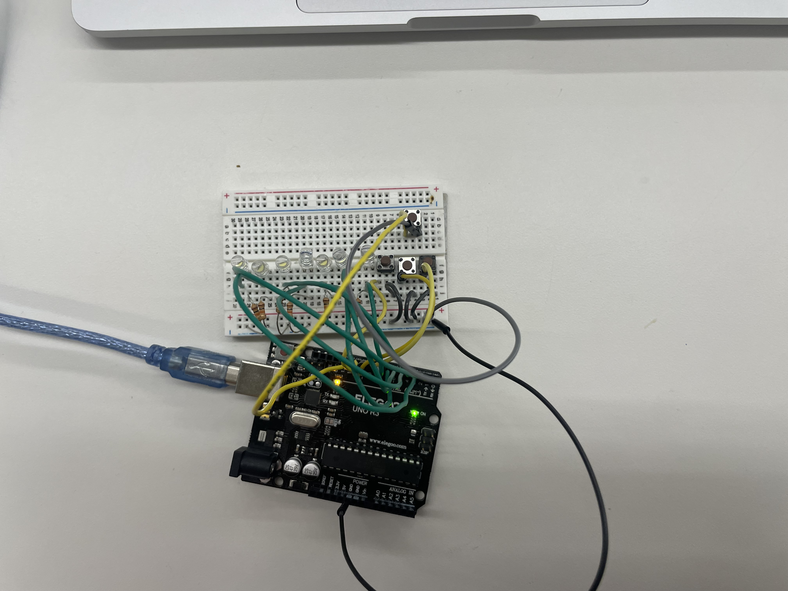
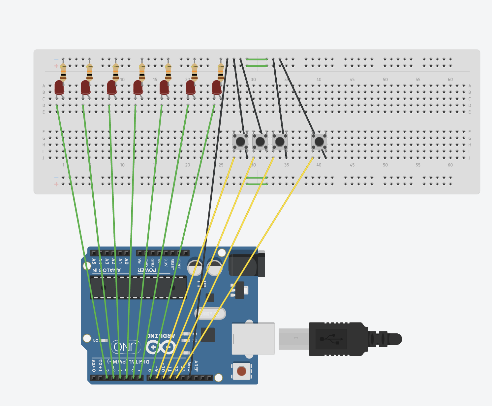
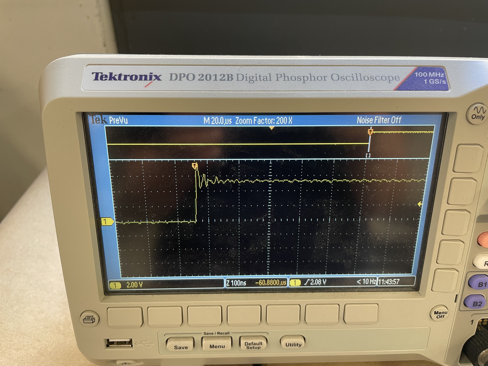

<div class="textcontainer">
<p class="margin"> </p>
<h3>Week 7: Output Devices</h3>
<h4>Assignment: Minimum Viable Product for Final Project</h4>
The pillbox idea has 2 main components: the actual box itself, which I'll probably 3D print, and the electronic input/output electronics. The 3D printing and Fusion designing will be pretty straightforward, so this week I decided to try out a super basic input/output circuit, since I anticipate the Arduino programming to be the most challenging part of this project.<br>
<br>
<h6><em>outputs</em></h6>
I started with an Arduino-based circut on the breadboard to control 7 LEDs (one for each day of the week), with the idea of expanding to 14 LEDs in my later ESP32 powered iterations (I was already almost out of digital pins on the Arduino with this version). The lights would turn on according to the frequency defined in the input.<br>
<br>
<h6><em>inputs</em></h6>
I'm starting very small with just 3 options for dose frequencies: everyday, every other day, and twice a week. Each option has a corresponding button. I don't think the final version will be button-based for input because it really limits the type of prescription regimens that you can input into the device, so Kassia suggested I try FireBase to store information about the user's exisitng regimens, allowing greater input options. To test that I could actually do the coding to make sure the lights turned on in multiple different ways, I stuck with the buttons for now. I added another button to reset/turn off the lights when the user is done filling one prescription. Eventually I want to use the capacitive pressure sensor or photoresistor inside each compartment to sense when pills are put in it and turn off the LED, but I'm still troubleshooting that and working on how to make the capacitive sensor sensitive enough.
<p class="margin"> </p>
<h6><em>Circuit and Code</em></h6>
Here is the circuit as I built it, and a TinkerCad illustration to clearly show the connections (resistors are 10 kOhms):
<p class="margin"> </p>
<div class="flexrow">


</div>
<br>
And here is the annotated code I came to after much troubleshooting and learning about toggle and i in Arduino, and some chatgpt debugging help. Learning Arduino code is a highly recommended spring break activity. <br>
Some helpful sources: <a href="https://www.arduino.cc/reference/en/libraries/toggle/">Arduino toggle library</a>, <a href="https://forum.arduino.cc/t/use-a-push-button-as-a-toggle-switch/486589">Arduino forum</a>, <a href="https://forum.arduino.cc/t/how-to-toggle-led/508015/5">this Arduino forum</a>, <a href="https://forum.arduino.cc/t/creating-class-and-objects/997333">and the class and objects forum on Arduino</a>.
<iframe src=https://create.arduino.cc/editor/kfagerstrom/5158ec5c-90a0-4386-a4ba-6850a54af3fe/preview?embed style="height:510px;width:100%;margin:10px 0" frameborder=0></iframe>
It worked! Here's a live demo:<br>
<div class="flexrow">
<video width="50%" autoplay muted>
<source src="mvpv1.MOV" type="video/mp4">
</video>
</div>
This was great except it was pretty much just some LEDs and I needed a pillbox. So I transferred everything to a protoboard along with a 7-day pillbox (that CVS made). It's starting to look and work like (a very rudimentary version) of the real thing!<br>
<div class="flexrow">
<video width="50%" autoplay muted>
<source src="mvpv2.MOV" type="video/mp4">
</video>
</div>
It was super helpful to put everything on the protoboard so I can have an idea of how to design the box around the electronics in Fusion.
<h6><em>the vision</em></h6>
The vision is coming together, but there are many next steps to be taken. Next week for Wifi and Bluetooth I'll work on the advanced input versions, and I already found a couple tutorials on using an html website to control an Arduino. After or simultaneously with putting that together, I'll try integrating the ESP32 because I'll definitely need more than the Arduino's 13 digital pins. Using the capacitive sensor to sense pill presence seems like it will be the last part because it goes a little bit beyond the basic functionality of the pillbox. But the vision is always changing so we'll see what I'm thinking next week.
<h6><em>oscilloscope</em></h6>
The oscilloscope readings turned out to be very boring when I hooked it up the LEDs and buttons because all they were doing was turning on and off. But i got a reading of the on and off voltages shown below, and it was cool to zoom in on the wave at the exact moment of turning on and off:
<div class="flexrow">
<video width="50%" autoplay muted>
<source src="oscilloscope.MOV" type="video/mp4">
</video>
</div>
<p class="margin"> </p>
<div class="flexrow">

</div>
<p class="caption">oscilloscope reading at the moment the button was turned on, with the off voltage jumping up to the on voltage</p>
I think this will be much more informative with the capacitive sensor/pill sensors because the circuit will have a lot more complexity. And the variable input may have a cooler wave function.
</div>